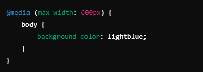
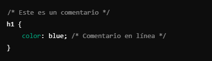
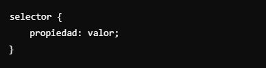

CSS (Cascading Style Sheets) es un lenguaje de estilo utilizado para describir la presentación de un documento HTML o XML. CSS permite separar el contenido del diseño, lo que facilita la creación de páginas web más atractivas y mantenibles.
CSS funciona mediante la aplicación de estilos a los elementos HTML. Los estilos pueden incluir propiedades como colores, fuentes, márgenes y diseño. Al combinar múltiples reglas CSS, se pueden crear diseños complejos.
CSS se puede incluir en un archivo HTML de tres maneras:
Una regla CSS es una instrucción que define cómo se deben presentar los elementos seleccionados. Consiste en un selector y un bloque de declaración.
Los medios CSS permiten aplicar estilos según el dispositivo o las características del entorno en que se visualiza la página. Esto se hace mediante consultas de medios (media queries).
Los comentarios en CSS se utilizan para agregar notas que no se mostrarán en la página web. Se escriben entre /* y */.
La sintaxis para definir propiedades en CSS sigue este formato:
